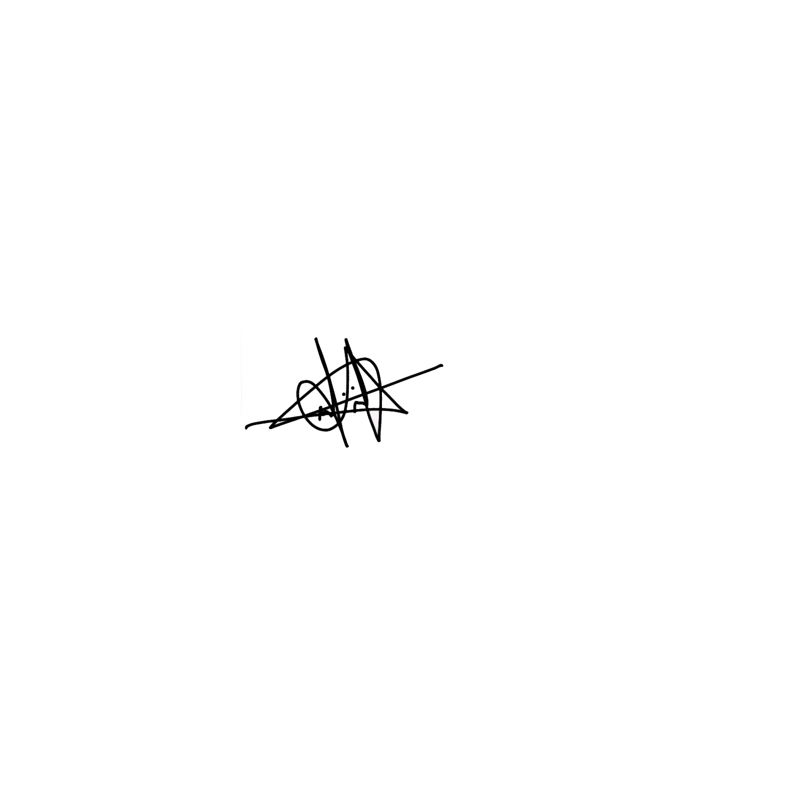

Validade do curso
Curso Teológico– Constituição Federal (Art. 205 e 206) – LDB nº 9.394/1996.
Reconhecimento do certificado
Decreto nº 5.154/2004 – Educação não-formal, sem vínculo com o MEC.
De quanto tempo é o curso?
Presencial e híbrido: 10 meses.
EAD: o aluno estuda no seu tempo.
Se houver abandono do curso?
Fica impedida a aprovação e a emissão do certificado.
Em que circunstâncias há reembolso?
Art. 49 do CDC – até 7 dias, com reembolso integral.
Momento de recebimento do certificado
Imediatamente após a conclusão.
O que você achou do curso?
“Ultrapassando limites!”
Diretor Geral
Gilberto Moreira
CGADB/65.099
CPF:
